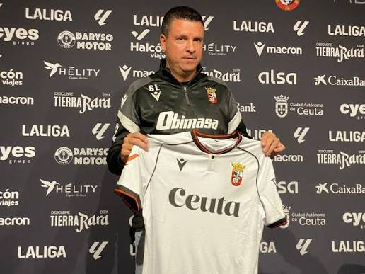
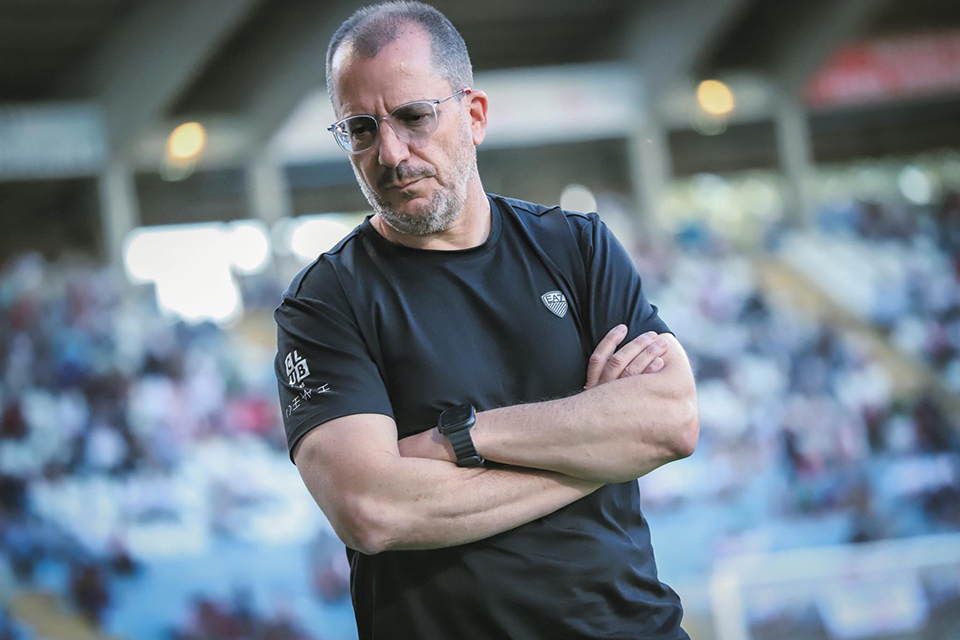
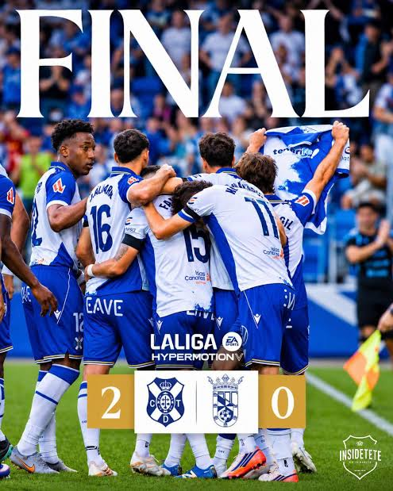

Últimas noticias del AD Ceuta
Bienvenidos al apartado de noticias del AD Ceuta. Aquí podrás conocer las últimas novedades del equipo, sus resultados, los cambios en el cuerpo técnico, los próximos partidos y todo lo que ocurre alrededor de la Agrupación Deportiva Ceuta. Nuestro objetivo es mantener informados a todos los aficionados sobre la actualidad del club y los acontecimientos más importantes de la temporada.
Sergio Lobera, nuevo entrenador del AD Ceuta

El AD Ceuta ha comenzado una nueva etapa tras anunciar la llegada de Sergio Lobera como entrenador del primer equipo. El técnico regresa a un club que ya conoce, después de haber dirigido al equipo durante la temporada 2011-2012. Su llegada tiene como objetivo mejorar los resultados y conseguir que el equipo pueda salir de la zona baja de la clasificación. Lobera cuenta con experiencia en diferentes equipos y competiciones internacionales. Ahora tendrá el reto de recuperar la confianza de los jugadores y de toda la afición caballa.
El final de la etapa de José Juan Romero

El 7 de noviembre de 2026, el club comunicó oficialmente que José Juan Romero dejaba de ser entrenador del primer equipo. Su salida puso fin a una etapa muy importante para la historia reciente de la entidad. Durante su trayectoria consiguió importantes objetivos deportivos y contribuyó al crecimiento del AD Ceuta. Su trabajo permitió vivir momentos históricos, especialmente con los ascensos conseguidos y el regreso del equipo al fútbol profesional. Desde el club se agradeció públicamente su compromiso, dedicación y cariño hacia el escudo y la ciudad de Ceuta.
Derrota del Ceuta frente al Tenerife

El AD Ceuta sufrió una derrota frente al Tenerife en un partido complicado para el conjunto caballa. A pesar del esfuerzo de los jugadores, el equipo no consiguió obtener un resultado positivo. Esta derrota obliga al Ceuta a seguir trabajando para mejorar su juego y conseguir mejores resultados en los próximos encuentros. Junto con el Homenaje a Nuestro compañero de profesión y gran jugador "Demi" Jesús de Miguel que falleció hace unas semanas tras un trágico choque con otro jugador que paró el mundo del futbol y conmovió a todo un país.
La afición, una parte fundamental del equipo
Los aficionados del AD Ceuta son una pieza fundamental para el club. En cada encuentro, tanto en casa como fuera, los seguidores demuestran su compromiso y pasión por los colores de su equipo. El estadio Alfonso Murube es el punto de encuentro de cientos de aficionados que animan al equipo durante los partidos. En los momentos difíciles, el apoyo de la afición puede convertirse en una motivación muy importante para los futbolistas.
Próximos objetivos del AD Ceuta
El principal objetivo del equipo es mejorar su situación en la clasificación y conseguir los puntos necesarios para lograr la permanencia en Segunda División. Para conseguirlo será importante mejorar tanto en defensa como en ataque, aprovechar las ocasiones de gol y mantener la concentración durante los noventa minutos de cada partido. La temporada todavía tiene mucho recorrido y el equipo tendrá que luchar jornada tras jornada para conseguir sus objetivos.
¡Vamos Ceuta!
Desde esta página queremos mostrar nuestro apoyo a la Agrupación Deportiva Ceuta. Independientemente de los resultados, el equipo representa a toda una ciudad y a una afición que nunca deja de creer. Seguiremos pendientes de todas las novedades, los resultados y los acontecimientos que rodean al club durante la temporada. Porque ser del Ceuta significa apoyar al equipo en los buenos y en los malos momentos.